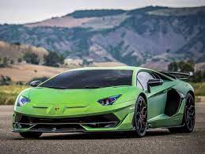
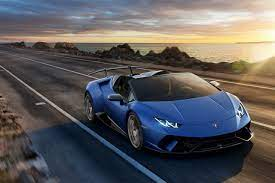
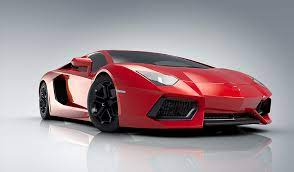

El mundo de los automoviles mas veloces, aún denominados exóticos, aumenta cada vez mas su participación dentro del mercado criollo habitual e irrumpe en aquel segmento que conociamos como "parque de autos exclusivos". Para aquellos quienes pueden obtenerlos claramente hoy se atreven mucho mas a adquirir estos modelos haciendose mucho mas habitual verlos circulando en Chile sobre todo en las calles del Gran Santiago. Los 3 que se enlistan a continuación y sus colores emblemáticos, son los mas codiados dentro del segmento.
|  |
Murcielago Green Precio: $230.000 |
|  |
Gallardo Spyder Blue $400.000 |
|  |
Diablo Rojo $530.000 |